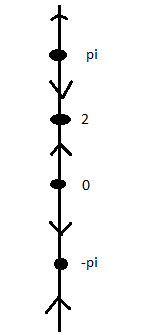
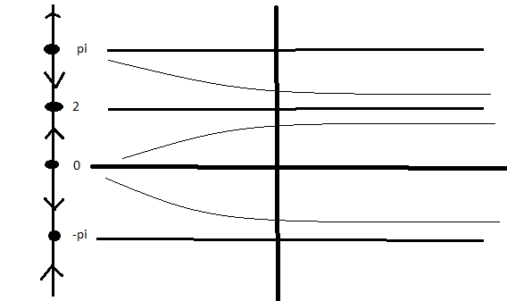

Section 2.7 Autonomous Equations and Population dynamics
Definition 2.7.1.
An autonomous differential equation is of the form
We will only deal with autonomous equations in this section. Autonomous equations are preferable for some physical models are autonomous (self-govering). For example a compressed spring has the same force at 4:00am and at 10:00pm.
Subsection 2.7.1 Examples of autonomous systems
Subsubsection 2.7.1.1 Population growth/decay
Assumption: The rate of growth of the population is proportional to the size of the population. Thus if \(k\) is the proportionality constant (growth rate) we have
But here \(P\) is the dependent variable, \(t\) is time, which is the independent variable. Thus \(P=P(t)\) is actually a function! This is a ODE. We can also write it \(P^{\prime}=kP\text{,}\) or the physics way, \(\dot{P}=kP\text{.}\)
Subsubsection 2.7.1.2 Logistic Growth:
Assumption: If population is small, then rate of growth is proportional to its size. If population is too large to be supported by its resources and environment, then the population will decrease, that \(\frac{dP}{dt} \lt 0\text{.}\) We can restate the assumptions as
- \(\frac{dP}{dt}\approx kP\) if \(P\) is small.
- If \(P>N\) then \(\frac{dP}{dt} \lt 0\text{.}\)
In this case, we have the logistic growth model
Subsection 2.7.2 Phase lines
Suppose \(\frac{dy}{dt}=y(1-y)\text{,}\) which has the slope field
Since the slopes are the same at each horizontal direction we can compress this information to something easier to draw, the phase line for the autonomous equation.
Rope Metaphor: We can reduce the entire 2d picture into a “rope” that the function climbs up and down.
- Start with IVP \(\frac{dy}{dt}=f(y)\) and \(y(0)=y_{0}\text{.}\)
- Draw a rope at start at \(y_{0}\text{.}\)
- At each \(y\) write \(f(y)\) on this rope to indicate the slope at that \(y\text{.}\)
- If \(f(y)=0\) stay put. If \(f(y)>0\) then climb up the rope, if \(f(y)\lt 0\) then climb down the rope.
- Bigger values for \(f(y)\) means climb faster as \(t\) moves through time.
- If you let \(y(t)\) your location on the rope, then \(y(t)\) is a solution to the IVP.
The rope in Figure 2.7.2 is the Phase line, but instead of numbers we use arrows to represent the slope.
The phase line for this equation has two points representing the equilibrium solutions, and arrows indicating the sign of the slopes given by \(f(y)\) between the equilibira.
For example, the phase line shows that as \(y\) is close to \(y=1\) from below, then the function keeps increasing, and thus must approach asymptotically to the equilibrium solution.
A sketch of some possible solutions looks like:
From our first sketch we can always notice the following things about sketching curves:
- If \(f(y(0))=0\) then \(y(0)\) is an equilibirum solution and \(y(t)=y(0)\) for all \(t\text{.}\)
- If \(f(y(0))>0\) then \(y(t)\) is increasing for all \(t\) and either \(y(y)\to\infty\) as \(t\to\infty\) or \(y(t)\) tends to first equilibirum point larger than \(y(0).\)
- If \(f(y(0)) \lt 0\) then then \(y(t)\) is decreasing for all \(t\) and either \(y(y)\to-\infty\) as \(t\to\infty\) or \(y(t)\) tends to first equilibirum point smaller than \(y(0).\)
Example 2.7.4. Curve Sketching.
We let
- Find equilibrium points \(y=2\) and \(y=n\pi\) (so infinite amount)
- Plug points and get that the phase line is : 
- Talk about what happens when things are getting close to the equilibrium solutions.
- Sketch curves: 
Example 2.7.5. We don't know how quickly solutions increase/decrease with respect to time.
Show that the graph \(\frac{dP}{dt}=(1-\frac{P}{20})^{3}(\frac{P}{5}-1)P^{7}\) has Phase line \(\begin{array}{c} \vee\\ 20\\ \wedge\\ 5\\ \vee\\ 0\\ \wedge \end{array}\)
By plotting a graph of actual solutions, you'll see that solutions between \(y=5\) and \(y=20\text{,}\) increase very rapidly. See the following slope field.
Example 2.7.6. Not all solutions exist for all \(t\).
Consider the equation \(\frac{dy}{dt}=(1+y)^{2}\text{.}\)
The phase line is \(\begin{array}{c} \wedge\\ -1\\ \wedge \end{array}\) Sketch a curve.
The Phase Line doesn't tell us if there could be any vertical assymptotes. (Phase LINE DOES NOT TELL US THIS INFO)
ACTUAL SOLUTION: \(y(t)=-1-\frac{1}{t+c}\text{.}\) Note that there is an assymptote at \(t=c\text{.}\)
If \(y(0)>-1\) then draw possible curve.
Example 2.7.7. Cusps.
Consider the equation \(\frac{dy}{dt}=\frac{1}{1-y}\text{.}\)
The phase line would be:
Role of Equilibrium points:
The solutions to autonomous equations either
- Tend to \(\pm\infty\)
- Tend to the equilibrium solutions.
- Stay consistently increasing/decreasing within equilibrium solutions.
Subsection 2.7.3 Classification of Equilibrium Solutions
Recall what asymptotic means: say that \(f\) is asymptotic to the line \(y = c\) if
We can classify the equilibrium solutions to an autonomous equation by looking at the behavior of “nearby” solutions. Solutions fall into one of three categories.
-
Asymptotically stable (sink)
- \(y_{0}\) is an asymptotically stable equilibrium if any solution with initial condition sufficiently close to \(y_{0}\) is asymptotic to \(y_{0}\) as \(t\) increases.
- Phase Line looks like this: \(\begin{array}{c} \vee\\ y_{0}\\ \wedge \end{array}\)
- Graph looks like: (reminds you that it is falling into something)
- In a graph of \(f(y)\) vs. \(y\text{,}\) we have \(f^{\prime}(y_{0}) \lt 0\text{.}\)
-
Asymptotically unstable (source):
- \(y_{0}\) is an asymptotically unstable equilibrium if any solution with initial condition sufficiently close to \(y_{0}\) tends torward \(y_{0}\) as \(t\) decreases.
- The phase line looks like this: \(\begin{array}{c} \wedge\\ y_{0}\\ \vee \end{array}\)
- Graph looks like: ( reminds you that it is coming from one place)
- In \(f(y)\) vs. \(y\) graph, we have \(f^{\prime}(y_{0})>0\text{.}\)
-
Semistable(node):
- \(y_{0}\) is an asymptotically semistable equilibrium if it doesn't fit the category of a sink or source \item Phase Line looks like this: \(\begin{array}{c} \wedge\\ y_{0}\\ \wedge \end{array}\)or \(\begin{array}{c} \vee\\ y_{0}\\ \vee \end{array}\)
- Graph looks like:
Example 2.7.8. Drawing solution from the \(f(y)\) vs. \(y\) graph).
Consider the equation \(\frac{dy}{dt}=y^{2}+y-6=(y+3)(y-2)\text{.}\)
The phase line is \(\begin{array}{c} \wedge\\ 2\\ \vee\\ -3\\ \wedge \end{array}\)
How can these be classified?
\(y_{0}=2\) is assymptotically unstable while \(y_{0}=-3\) is assymptotically stable.
Example 2.7.9. (Using \(f(y)\)).
We can figure out classification directly from the graph of \(f(y)\text{.}\)
Example 2.7.10.
Suppose we only know the graph of \(f(y)\) not the actual formula.
Then draw phase line : \(\begin{array}{c} \vee\\ c\\ \wedge\\ b\\ \vee\\ a\\ \wedge \end{array}\) Now sketch some solution curves.